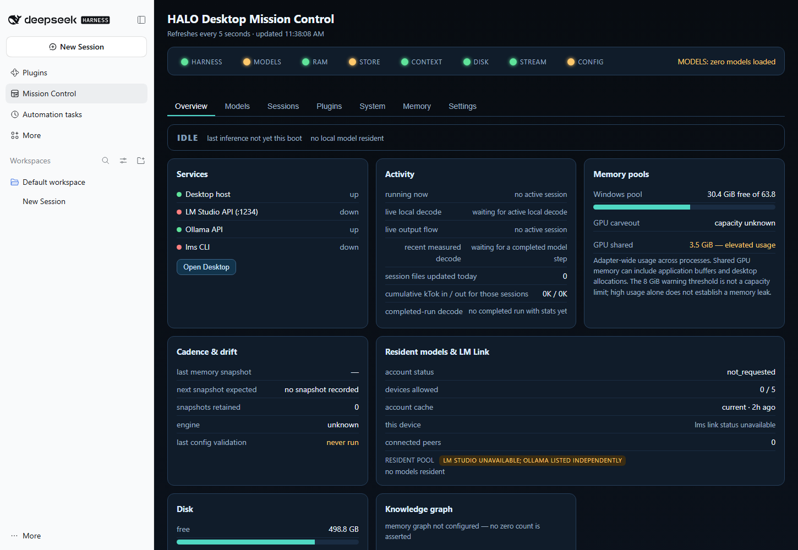

Understand what’s running.
Inspect service health, resident model inventory, session activity, plugin state and memory charts. The dashboard distinguishes idle, unavailable and unconfigured states.
Web and Desktop, with Mission Control built in. A configured starting point for technical Windows users who want to see their models, sessions and tools alongside the chat.
01 / The control room
Open Mission Control in Desktop’s sidebar or Web’s browser dashboard. Both use the same seven-tab interface, each connected to its own host.

Seven views. One workspace.
Inspect service health, resident model inventory, session activity, plugin state and memory charts. The dashboard distinguishes idle, unavailable and unconfigured states.
Model actions, session controls and a transactional settings editor live alongside status. Desktop uses its current authenticated connection, with separate dashboard state.
02 / A connected starting point
The complete setup brings the interfaces and their companion tools together. Profiles stay separate; the configuration stays inspectable.
Inspect the installer sourceUse the browser or the official Electron Desktop app. Separate profiles and private ports let a new installation coexist with an existing one.
Web + Desktop + Mission ControlWigolo discovers web sources. Reddit/Redlib provides a community-retrieval path. XERJ searches retained evidence once you supply and index the material.
Web discovery · Community sources · Indexed documentsPrivate Ollama storage, local Qwen choices and a DeepSeek cloud route. Optional Codex and Claude Code connections use your own accounts. No credentials or model weights ship in the ZIP.
Local choices + Account-backed servicesPinned downloads, a locked runtime and installation receipts make the setup traceable. Start and stop scripts act only on processes whose recorded identity matches this installation.
New destination · Own data · Recovery recordsShare a source-linked Markdown library across hosts. Optional Coordinator, Coder and Auditor presets keep requirements and findings in a project ledger; starting a team requires an explicit request.
Shared knowledge · Optional bounded projects03 / Under the surface
The hosts run on your Windows machine. Companion services bind to loopback. Cloud models and web research still use their external services.
Web profile 3180
Mission Control 3190
Desktop profile Own host
Embedded Mission Control 3191
Private model gateway
11435Retained-evidence search
9202Community + web research
Redlib 18082 · Wigolo stdioProvider sign-in, local model downloads and document indexing are separate setup steps. Service wiring alone does not establish a successful retrieval or model response.
04 / Start with a clean destination
Keep your working installation. Install this one alongside it.
An online installer with public scripts, checksums and a pinned runtime. Applications download during setup.
Download for Windows x64 Verify the SHA-256 checksum ↗Compare the ZIP’s SHA-256 with the linked checksum. Extract the bundle to a new folder.
Open Install-DSH.cmd. It downloads the pinned
apps and provisions missing prerequisites. Windows may
request elevation or a restart.
.\Install-DSH.cmd
Follow the guide for accounts and models. The new DSH Complete shortcut folder contains Desktop, Start Web and Stop DSH + Wigolo.
Read the installation guideKnow what you’re installing
This is a community Windows configuration and research repository, maintained by Scott Converse. It builds on upstream DeepSeek Harness; it is not an official DeepSeek distribution.
Read the verification recordStart with the source. Or the setup.
Want to help? Report a reproducible issue or inspect the source and its dated evidence.